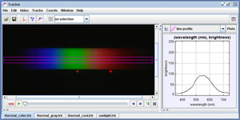

This is the spectrum of a 60W "soft white" incandescent lamp with HeNe red (633nm) and green (543 nm) laser spots for calibration. The line profile tool determines brightness from the RGB pixel data using a standard video grayscale conversion.
